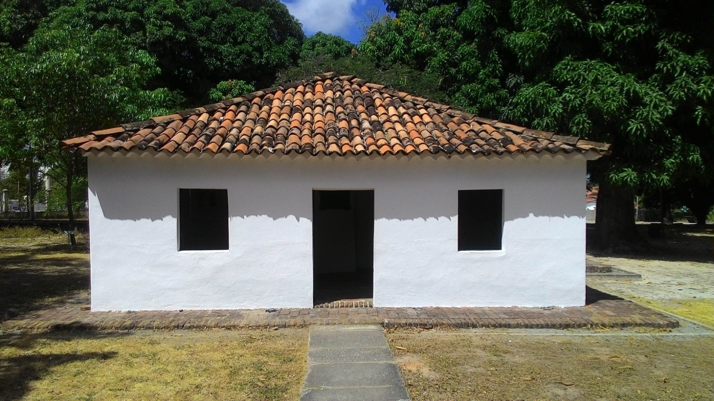
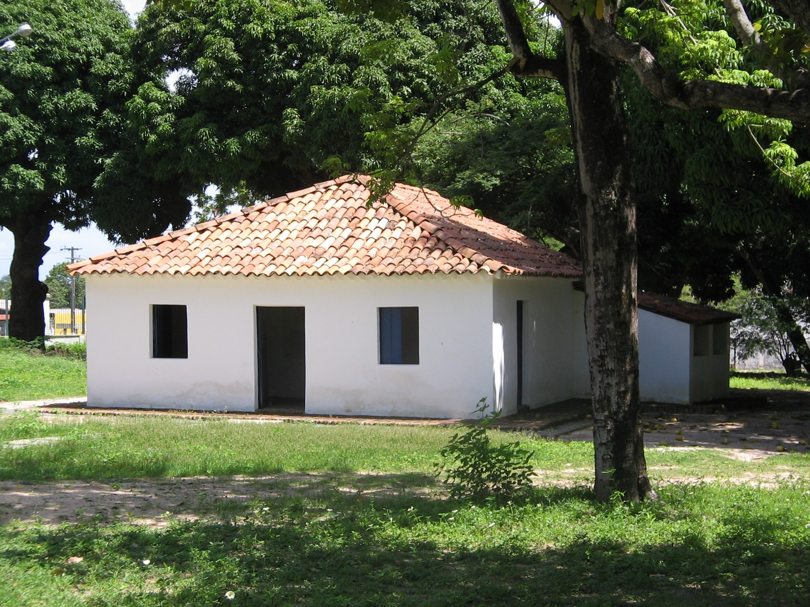
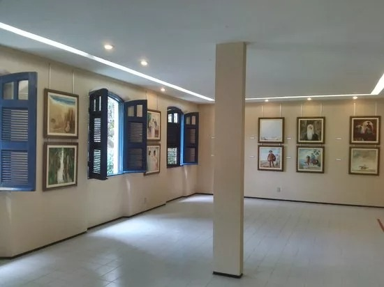
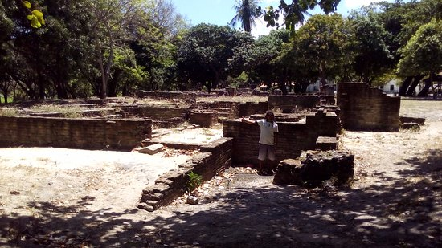
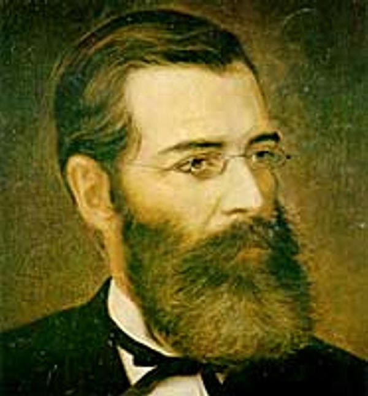

Casa de José de Alencar
O berço da literatura cearense em meio à natureza de Messejana

O Sítio Alagadiço Novo
A Casa de José de Alencar, centro cultural pertencente à Universidade Federal do Ceará, está localizada na Av. Washington Soares, 6055, em Messejana. O referido Centro funciona no sítio Alagadiço Novo, em sete hectares do que restou da antiga propriedade do Senador José Martiniano de Alencar. Este espaço cultural tem importante simbologia pois foi aqui que nasceu o maior romancista brasileiro, o escritor José de Alencar, em 1829.
Em 1964, o então presidente da república Marechal Humberto Castelo Branco providenciou o tombamento pelo Instituto do Patrimônio Histórico Nacional (Iphan) do pequeno imóvel e sete hectares ao redor da construção. Naquela época, a casa grande já havia sido demolida e as únicas edificações que restavam eram a casinha e as ruínas do primeiro engenho a vapor do Ceará. A administração e guarda do patrimônio histórico foi entregue à Universidade Federal do Ceará para ser um equipamento de extensão acadêmica e de incentivo à produção literária cearense.
A Universidade construiu um prédio, projeto assinado por Liberal de Castro, para ser a sede administrativa e abrigar salas de exposição e instalações para receber escritores, artistas e autoridades, além de salas de aula. O prédio projetado no estilo colonial possui áreas de exposição: o museu Arthur Ramos, coleção de rendas de bilro Luiza Ramos, a Pinacoteca Floriano Teixeira e o Salão Iracema Descartes Gadelha de Messejana!
Galeria

Oficina de Escrita Criativa tem inscrições abertas no Sítio

Trilhas guiadas pelas ruínas do antigo engenho voltam à programação

O Legado de Alencar
Localizado no antigo Sítio Alagadiço Novo, em Fortaleza, o espaço preserva a história de um dos maiores escritores do Brasil. Hoje, funciona como um centro cultural da UFC, abrigando museu, pinacoteca e a primeira biblioteca do estado.